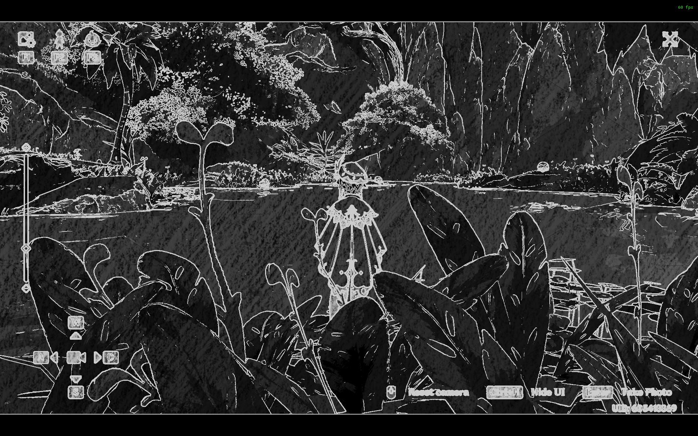

asdf asdf asdf nerf here
The first part of our project was to create custom shaders for Genshin Impact, and we broke down this task into multiple parts:
- Injecting Shaders into Genshin Impact
- Creating the Kuwahara Filters
- Creating the Noir Shaders
- Creating the Cel Shaders
- Creating the Anime/Manga Shaders
Injecting Shaders into Genshin Impact
In order to do this, we first needed to find a way to inject shaders into the game. Shaders are part of the rendering pipeline that most games do not expose to the end user, as game developers generally do not want the end user to make any modifications to their game. Such modifications are protected through the use of Anti-Cheat systems. Genshin Impact has an anti-cheat built in, and we found a way to bypass the anti-cheat and inject our own shaders.
We were able to find the Genshin-Impact-ReShade repository on GitHub that accomplished this exact task, and upon installation onto a Windows machine, we were able to inject the built-in shaders.
These shaders are written using ReShade FX, which is a shading language and compiler whose syntax is very closely related to HLSL.
To avoid getting Levy's actual Genshin Impact account from being banned, Levy created a new account for this project.
Creating the Kuwahara Filters
The first shader that we tackled was the Kuwahara Filter. The Kuwahara filter creates a painting-like flattening effect along the local feature directions, while preserving shape boundaries. This approach preserves edges, and we chose this approach over bilateral filters and mean shift filters due to its effectiveness over high and low contrast images. We created three different versions of the Kuwahara Filter: one based on square quadrants, one based on circular kernels, and one based on anisotropic kernels.
To create the Kuwahara filter based on square quadrants, we create a square filter that has four square quadrants that are each radius by radius large and overlap by one pixel, which is the current pixel that is being processed.

If we let |W_k| = (radius + 1)^2, we calculate the mean, m_k as the following:
We created a compute shader dynamically generated gaussian textures.